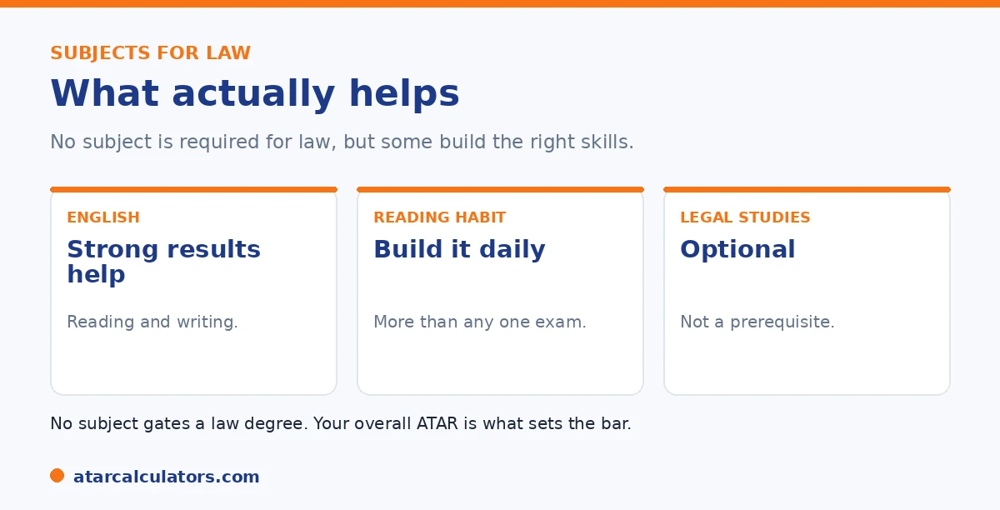

Here is the short version. No subject is needed for an undergraduate law degree. So your strategy is to choose subjects you can do well in, to maximise your ATAR. English helps build the reading and writing skills law rewards, and a strong reading habit matters more than any single subject. Legal Studies is optional, not a prerequisite. Your overall ATAR is what sets the bar for law.
Students aiming for law often ask which subjects they must take. The reassuring answer is that there is no needed subject, so the strategy is simpler than you think.
Below is how to plan your senior years for law. To explore your options, use our law ATAR calculator.
Key takeaways
- No subject is needed for an undergraduate law degree.
- Choose subjects you can do well in, to maximise your ATAR.
- English builds the reading and writing skills law rewards.
- A strong reading habit matters more than any one subject.
- Legal Studies is optional, not a prerequisite.
- Your overall ATAR is what sets the bar.
There are no needed subjects
Start with the good news. Undergraduate law has no prerequisite subjects. Unlike medicine, which often needs chemistry, law does not need any particular subject in Year 11 and 12.

So your subject choice is freer than for many degrees. The goal is simply to build the highest ATAR you can, which means choosing subjects that suit you.
Choose to maximise your ATAR
Since law cares about your overall ATAR, the smart strategy is to choose subjects you can excel in. Strong results across your subjects matter far more than studying something law-related.
So play to your strengths. A high mark in a subject you enjoy and are good at does more for your law application than a lower mark in a subject you picked because it sounded relevant.
In practice, that means building your subject line-up around three questions. First, where can you realistically score in the top bands? Those subjects should anchor your selection. This is because your ATAR is a rank and top marks in any subject rank you highly. Second, does the mix keep your options open? A spread that includes at least one essay-based subject and one quantitative subject gives you flexibility if your plans shift towards a combined degree in commerce or science. Third, are you avoiding the trap of chasing scaling at the expense of performance? A high-scaling subject only helps if you can actually earn a strong mark in it. A moderate mark in a high-scaling subject often beats a moderate mark in a low-scaling one by less than students imagine. It is easily outweighed by a top mark in a subject you are genuinely good at. The winning strategy for law is almost boringly simple. Take subjects you can ace, work consistently, and let your overall ATAR do the talking.
Why English helps
That said, English is worth taking seriously. Law is a degree built on reading carefully and writing clearly, and English develops exactly those skills. Strong English also supports your performance across other subjects.
More broadly, a consistent reading habit is one of the best long-term preparations for law. It builds comprehension and vocabulary that help both your ATAR and your future study. See our law ATAR guide.
Want to see your law options?
Try the law ATAR calculator →Do you need Legal Studies?
A common question is whether you need Legal Studies. The answer is no. Legal Studies is optional, and not a prerequisite for any law degree. It can give you a taste of the field, but it does not give you an entry advantage.
So take Legal Studies if it interests you and you can do well in it, not because you think law needs it. The same applies to any subject: choose it for your strengths, not a false sense of obligation.
It is worth understanding why Legal Studies gives no advantage. This is because the myth is so persistent. University law faculties assume you arrive knowing no law. The entire first year is built to teach it from scratch. Nothing in Legal Studies is a prerequisite for that, and admissions look only at your ATAR, not at which subjects produced it. In fact, Legal Studies scales modestly in most states. So a student who takes it expecting an edge. But scores only moderately, can end up with a lower ATAR than if they had taken a subject they were stronger in. The one genuine benefit is personal, not strategic. It lets you sample legal reasoning and case study before committing to a law degree. That can help you decide whether the field actually suits you. That is a good reason to take it. Gaining admission points is not. This is because there are none to gain.
The bigger picture
Beyond subjects, your law strategy is really an ATAR strategy. Build strong, consistent study habits across Year 11 and 12, and aim for the highest overall result you can.
And remember that if your ATAR falls short of a top cut-off, there are other routes into law, including lower-ATAR universities and the postgraduate JD. So plan for a strong ATAR. But know the door stays open either way. See our guide on the lowest ATAR for law.
Do high-scaling subjects help a law ATAR?
High-scaling subjects help any ATAR, including one aimed at law, but only if you can score well in them. Since law has no specific subject prerequisites beyond English, you are free to choose subjects that both suit you and scale reasonably.
So the usual rule applies: pick subjects you can excel in first, then let scaling break ties. A strong mark in a subject you enjoy beats a weak mark in a high-scaling one you struggle with. See how scaling works.
A backup plan for law
Because top law cutoffs are very high, it is wise to have a backup. Law is offered at many universities across a wide range of cutoffs, so a lower-cutoff law program, or a related degree with a transfer option, keeps your options open.
Some students also enter law as graduates, through a JD, after another degree. So a first degree you would value anyway can serve as both a backup and a stepping stone. See pathways below the top cutoffs.
Common questions
What subjects should I take for law?
There are no needed subjects for an undergraduate law degree. Choose subjects you can do well in, to maximise your ATAR. English helps build the reading and writing skills law rewards, but no single subject is needed.
Do you need Legal Studies for law?
No. Legal Studies is optional and not a prerequisite for any law degree. It can give you a taste of the field, but it does not give you an entry advantage. Take it only if it interests you and suits your strengths.
Which subjects help a law ATAR?
Any subjects you can excel in, since law cares about your overall ATAR. English is valuable for the reading and writing skills it builds, and supports other subjects. Beyond that, strong results matter more than the subject itself.
How do I plan Year 11 and 12 for law?
Choose subjects you can do well in, take English seriously, build a strong reading habit, and aim for the highest overall ATAR you can. There are no needed subjects, so the strategy is really an ATAR strategy.
Does studying law-related subjects help me get in?
Not really. Law has no prerequisite subjects. And a law-related subject gives no entry advantage. A high mark in a subject you are good at helps your ATAR more than a lower mark in a subject chosen because it sounds relevant.
Plan your path to law
See realistic pathways into law based on your ATAR. Free, and no signup.
Open the law ATAR calculator →Related guides
This guide is general information for students and parents, not formal admissions advice. ATAR cut-offs, degree structures and entry rules vary by university and change every year. The LSAT applies only to some postgraduate JD programs, not undergraduate law. Any figures here are approximate and based on recent years. So always confirm the current details with each university and your state admissions centre (such as UAC, VTAC, QTAC, SATAC or TISC). Reviewed by the ATARCalculators Editorial Team.